디즈니+ 애니151편 중 인기 60편
순서: 넷플릭스 한국 TOP10 에 든 작품을 먼저(최근에 든 순), 그다음은 TMDB 전 세계 인기도 순입니다 — 넷플릭스 외 서비스는 공식 순위를 공개하지 않습니다. 제공처는 JustWatch 자료(2026-09-23 확인)이며 가입 전 서비스에서 최종 확인하세요. 디즈니+ 요금·할인 →
1위시 Wish영화 · 2023 · 애니메이션 · 가족 · 95분넷플릭스 한국 최고 3위2 귀멸의 칼날 Demon Slayer: Kimetsu no Yaiba시리즈 · 2019 · 애니메이션 · 액션 · 넷플릭스, 왓챠, 티빙에도넷플릭스 한국 최고 1위3더 퍼스트 슬램덩크 The First Slam Dunk영화 · 2022 · 애니메이션 · 코미디 · 125분 · 넷플릭스, 웨이브, 왓챠, 티빙에도넷플릭스 한국 최고 4위4사랑의 하츄핑 Heartsping: Teenieping of Love영화 · 2024 · 애니메이션 · 가족 · 86분 · 넷플릭스에도넷플릭스 한국 최고 2위5극장판 스파이 패밀리 코드: 화이트 Spy x Family Code: White영화 · 2023 · 애니메이션 · 코미디 · 110분 · 넷플릭스, 왓챠, 티빙에도넷플릭스 한국 최고 9위6스파이 패밀리 SPY x FAMILY시리즈 · 2022 · 애니메이션 · 액션 · 넷플릭스, 왓챠, 티빙에도넷플릭스 한국 최고 6위7아메리칸 대드! American Dad!시리즈 · 2005 · 애니메이션 · 코미디제공처 ↗8심슨 가족 The Simpsons시리즈 · 1989 · 애니메이션 · 코미디제공처 ↗9패밀리 가이 Family Guy시리즈 · 1999 · 애니메이션 · 코미디제공처 ↗10블리치 BLEACH시리즈 · 2004 · 액션 · 모험 · 넷플릭스, 왓챠, 티빙에도제공처 ↗11킹 오브 더 힐 King of the Hill시리즈 · 1997 · 애니메이션 · 코미디제공처 ↗12밥스 버거스 Bob's Burgers시리즈 · 2011 · 애니메이션 · 코미디제공처 ↗13퓨쳐라마 Futurama시리즈 · 1999 · 애니메이션 · 코미디제공처 ↗14피니와 퍼브 Phineas and Ferb시리즈 · 2007 · 애니메이션 · 코미디제공처 ↗15
귀멸의 칼날 Demon Slayer: Kimetsu no Yaiba시리즈 · 2019 · 애니메이션 · 액션 · 넷플릭스, 왓챠, 티빙에도넷플릭스 한국 최고 1위3더 퍼스트 슬램덩크 The First Slam Dunk영화 · 2022 · 애니메이션 · 코미디 · 125분 · 넷플릭스, 웨이브, 왓챠, 티빙에도넷플릭스 한국 최고 4위4사랑의 하츄핑 Heartsping: Teenieping of Love영화 · 2024 · 애니메이션 · 가족 · 86분 · 넷플릭스에도넷플릭스 한국 최고 2위5극장판 스파이 패밀리 코드: 화이트 Spy x Family Code: White영화 · 2023 · 애니메이션 · 코미디 · 110분 · 넷플릭스, 왓챠, 티빙에도넷플릭스 한국 최고 9위6스파이 패밀리 SPY x FAMILY시리즈 · 2022 · 애니메이션 · 액션 · 넷플릭스, 왓챠, 티빙에도넷플릭스 한국 최고 6위7아메리칸 대드! American Dad!시리즈 · 2005 · 애니메이션 · 코미디제공처 ↗8심슨 가족 The Simpsons시리즈 · 1989 · 애니메이션 · 코미디제공처 ↗9패밀리 가이 Family Guy시리즈 · 1999 · 애니메이션 · 코미디제공처 ↗10블리치 BLEACH시리즈 · 2004 · 액션 · 모험 · 넷플릭스, 왓챠, 티빙에도제공처 ↗11킹 오브 더 힐 King of the Hill시리즈 · 1997 · 애니메이션 · 코미디제공처 ↗12밥스 버거스 Bob's Burgers시리즈 · 2011 · 애니메이션 · 코미디제공처 ↗13퓨쳐라마 Futurama시리즈 · 1999 · 애니메이션 · 코미디제공처 ↗14피니와 퍼브 Phineas and Ferb시리즈 · 2007 · 애니메이션 · 코미디제공처 ↗15
귀멸의 칼날 Demon Slayer: Kimetsu no Yaiba시리즈 · 2019 · 애니메이션 · 액션 · 넷플릭스, 왓챠, 티빙에도넷플릭스 한국 최고 1위3더 퍼스트 슬램덩크 The First Slam Dunk영화 · 2022 · 애니메이션 · 코미디 · 125분 · 넷플릭스, 웨이브, 왓챠, 티빙에도넷플릭스 한국 최고 4위4사랑의 하츄핑 Heartsping: Teenieping of Love영화 · 2024 · 애니메이션 · 가족 · 86분 · 넷플릭스에도넷플릭스 한국 최고 2위5극장판 스파이 패밀리 코드: 화이트 Spy x Family Code: White영화 · 2023 · 애니메이션 · 코미디 · 110분 · 넷플릭스, 왓챠, 티빙에도넷플릭스 한국 최고 9위6스파이 패밀리 SPY x FAMILY시리즈 · 2022 · 애니메이션 · 액션 · 넷플릭스, 왓챠, 티빙에도넷플릭스 한국 최고 6위7아메리칸 대드! American Dad!시리즈 · 2005 · 애니메이션 · 코미디제공처 ↗8심슨 가족 The Simpsons시리즈 · 1989 · 애니메이션 · 코미디제공처 ↗9패밀리 가이 Family Guy시리즈 · 1999 · 애니메이션 · 코미디제공처 ↗10블리치 BLEACH시리즈 · 2004 · 액션 · 모험 · 넷플릭스, 왓챠, 티빙에도제공처 ↗11킹 오브 더 힐 King of the Hill시리즈 · 1997 · 애니메이션 · 코미디제공처 ↗12밥스 버거스 Bob's Burgers시리즈 · 2011 · 애니메이션 · 코미디제공처 ↗13퓨쳐라마 Futurama시리즈 · 1999 · 애니메이션 · 코미디제공처 ↗14피니와 퍼브 Phineas and Ferb시리즈 · 2007 · 애니메이션 · 코미디제공처 ↗15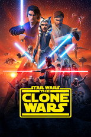
스타워즈: 클론전쟁 Star Wars: The Clone Wars시리즈 · 2008 · 액션 · 모험제공처 ↗16스파이디, 그리고 놀라운 친구들 Spidey and His Amazing Friends시리즈 · 2021 · 애니메이션 · 가족제공처 ↗17주토피아 2 Zootopia 2영화 · 2025 · 애니메이션 · 모험 · 108분제공처 ↗18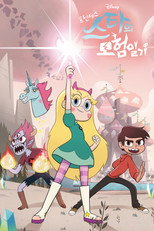
프린세스 스타의 모험일기 Star vs. the Forces of Evil시리즈 · 2015 · 액션 · 모험제공처 ↗19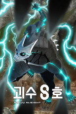
괴수 8호시리즈 · 2024 · 애니메이션 · 액션 · 넷플릭스, 왓챠, 티빙에도제공처 ↗20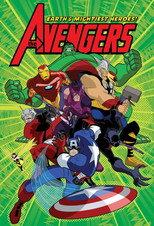
어벤져스: 지구 최고의 영웅들 The Avengers: Earth's Mightiest Heroes시리즈 · 2010 · 액션 · 모험제공처 ↗21킴 파서블 Kim Possible시리즈 · 2002 · 애니메이션 · 액션제공처 ↗22괴짜가족 괴담일기 Gravity Falls시리즈 · 2012 · 액션 · 모험제공처 ↗23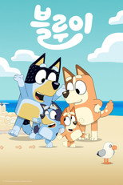
블루이 Bluey시리즈 · 2018 · 애니메이션 · 코미디제공처 ↗24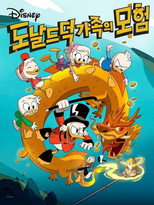
도날드 덕 가족의 모험 DuckTales시리즈 · 2017 · 가족 · 코미디제공처 ↗25인사이드 아웃 Inside Out영화 · 2015 · 애니메이션 · 가족 · 102분제공처 ↗26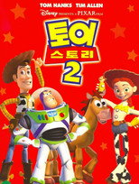
토이 스토리 2 Toy Story 2영화 · 1999 · 애니메이션 · 코미디 · 94분제공처 ↗27호퍼스 Hoppers영화 · 2026 · 모험 · 애니메이션 · 104분제공처 ↗28아오아시시리즈 · 2022 · 애니메이션제공처 ↗29왓 이프...? What If...?시리즈 · 2021 · 애니메이션 · 액션제공처 ↗30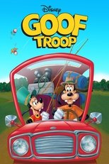
구피와 친구들 Goof Troop시리즈 · 1992 · 코미디 · 가족제공처 ↗31베이블레이드 X BEYBLADE X시리즈 · 2023 · 애니메이션 · 액션 · 넷플릭스, 왓챠, 티빙에도제공처 ↗32꼬마의사 맥스터핀스 Doc McStuffins시리즈 · 2012 · 애니메이션 · 가족제공처 ↗33코코 Coco영화 · 2017 · 가족 · 애니메이션 · 105분제공처 ↗34도쿄 리벤저스시리즈 · 2021 · 애니메이션 · 액션 · 넷플릭스, 티빙에도제공처 ↗35미키마우스 클럽하우스 Mickey Mouse Clubhouse시리즈 · 2006 · 가족 · 애니메이션제공처 ↗36라이온 킹 The Lion King영화 · 1994 · 애니메이션 · 가족 · 89분제공처 ↗37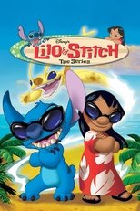
릴로와 스티치 Lilo & Stitch: The Series시리즈 · 2003 · 애니메이션 · 코미디제공처 ↗38토이 스토리 Toy Story영화 · 1995 · 가족 · 코미디 · 81분제공처 ↗39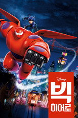
빅 히어로 Big Hero 6영화 · 2014 · 모험 · 가족 · 102분제공처 ↗40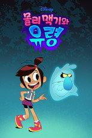
몰리 맥기와 유령 The Ghost and Molly McGee시리즈 · 2021 · 애니메이션 · SF/판타지제공처 ↗41모아나 2 Moana 2영화 · 2024 · 모험 · 애니메이션 · 100분제공처 ↗42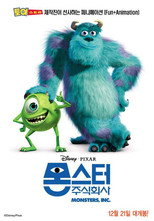
몬스터 주식회사 Monsters, Inc.영화 · 2001 · 애니메이션 · 코미디 · 92분제공처 ↗43스타워즈 반란군 Star Wars Rebels시리즈 · 2014 · 액션 · 모험제공처 ↗44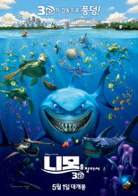
니모를 찾아서 Finding Nemo영화 · 2003 · 애니메이션 · 가족 · 100분제공처 ↗45솔라 오포짓 Solar Opposites시리즈 · 2020 · 코미디 · 애니메이션 · 넷플릭스에도제공처 ↗46인사이드 아웃 2 Inside Out 2영화 · 2024 · 애니메이션 · 모험 · 97분제공처 ↗47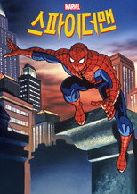
스파이더맨 Spider-Man시리즈 · 1994 · 애니메이션 · 액션제공처 ↗48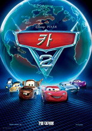
카 2 Cars 2영화 · 2011 · 애니메이션 · 가족 · 113분제공처 ↗49제이크와 네버랜드 해적들 Jake and the Never Land Pirates시리즈 · 2011 · 애니메이션 · 액션제공처 ↗50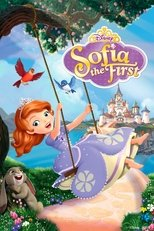
리틀 프린세스 소피아 Sofia the First시리즈 · 2013 · 가족 · 애니메이션제공처 ↗51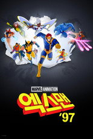
엑스맨 '97 X-Men '97시리즈 · 2024 · 애니메이션 · 액션제공처 ↗52주토피아 Zootopia영화 · 2016 · 애니메이션 · 모험 · 108분제공처 ↗53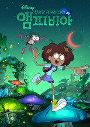
신비한 개구리 나라, 앰피비아 Amphibia시리즈 · 2019 · 애니메이션 · 액션제공처 ↗54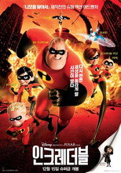
인크레더블 The Incredibles영화 · 2004 · 액션 · 모험 · 115분제공처 ↗55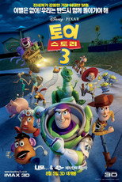
토이 스토리 3 Toy Story 3영화 · 2010 · 애니메이션 · 가족 · 102분제공처 ↗56스파이더맨 Marvel's Spider-Man시리즈 · 2017 · 애니메이션 · SF/판타지제공처 ↗57겨울왕국 2 Frozen II영화 · 2019 · 가족 · 애니메이션 · 103분제공처 ↗58티몬과 품바 Timon and Pumbaa시리즈 · 1995 · 애니메이션 · 코미디제공처 ↗59문걸과 데블 다이노소어 Marvel's Moon Girl and Devil Dinosaur시리즈 · 2023 · 애니메이션 · 가족제공처 ↗60굿 다이노 The Good Dinosaur영화 · 2015 · 모험 · 애니메이션 · 101분제공처 ↗